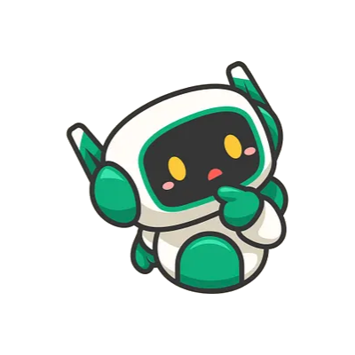
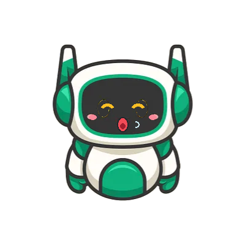
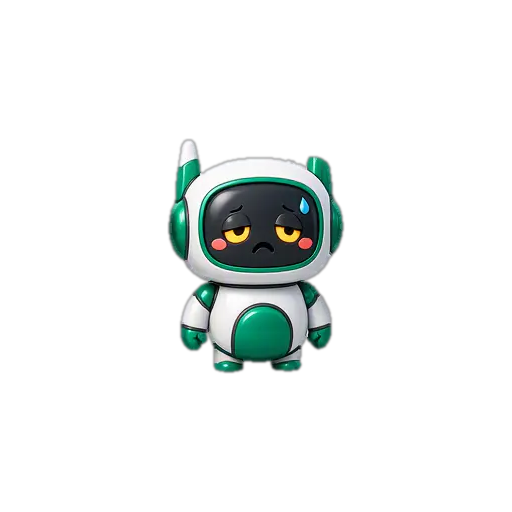
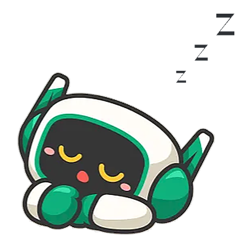
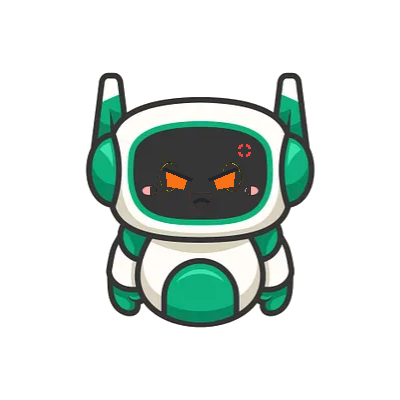

Где живёт
Внутри AURORA — инструмента, который разбирает посты ВКонтакте по всем филиалам городской сети. Космо патрулирует экран, ходит по графикам и заглядывает вам через плечо.
Патрулирует экран, разбирает посты 16 филиалов библиотек Владимира и раздаёт советы по SMM. Иногда — с криком «Уи-и-и!».

Знакомство
Космо — маскот сервиса AURORA. Он читает посты ВКонтакте 16 филиалов библиотек Владимира, чтобы библиотекари меньше сидели в отчётах и больше — в книгах.
Внутри AURORA — инструмента, который разбирает посты ВКонтакте по всем филиалам городской сети. Космо патрулирует экран, ходит по графикам и заглядывает вам через плечо.
Комментирует статистику филиалов человеческим языком, подсказывает идеи для постов и честно зевает, если отчёт скучный. Он это не скрывает.
С библиотекарями Владимира. Все его фразы — про их будни: закрытые смены, лучшие посты месяца и читатели, которые снова спросили про Wi-Fi.
Эмоции
У Космо семь лиц — как у человека неделю без отпуска, только красивее. Каждое нарисовано спрайтом и включается по делу.





Умения
Он не просто сидит в углу экрана и мил. Хотя и это тоже.
Шестнадцать библиотек, десятки показателей — и всё это Космо пересказывает по-человечески: кто вырос, кто вздремнул, кого поздравить.
AURORA читает ленту каждого филиала и раскладывает по полочкам: охваты, репосты, лучшие публикации. Космо — лицо этого разгрома.
Когда публиковать, что продублировать в сторис и почему картинка с книгой зашла, а длинная цитата — нет. Бестактных вопросов не боится.
Голос «Бэла» от ElevenLabs: 61 записанная фраза с той самой интонацией, будто он действительно устал в конце смены.
Патрулирует интерфейс AURORA: обходит графики, заглядывает в таблицы, садится на панель, если она тёплая.
Схватите мышью и запустите — он честно закричит «Уи-и-и!», приземлится по законам физики и вернётся к работе. Профессионал.
Под капотом
Без магии. Вот из чего Космо собран на самом деле.
Собран из 7 эмоций и одной круглой головы. Гарантия — до первой сессии массового зева.
ИИ-разговор
Он подключён к той же модели, что работает в AURORA. Спросите про SMM, библиотечные паблики или попросите идею поста — ответит по делу, без канцелярита.
Отвечает ИИ Mistral. Держите вопрос по делу — так ответ будет полезнее.
Площадка
Кликните по Космо — он сменит настроение. Схватите и швырните — он не обидится, он летал и не так.
Клик — новая эмоция. Схватить и бросить — тоже способ пообщаться. Космо просил передать, что ему не больно, он на батарейках.